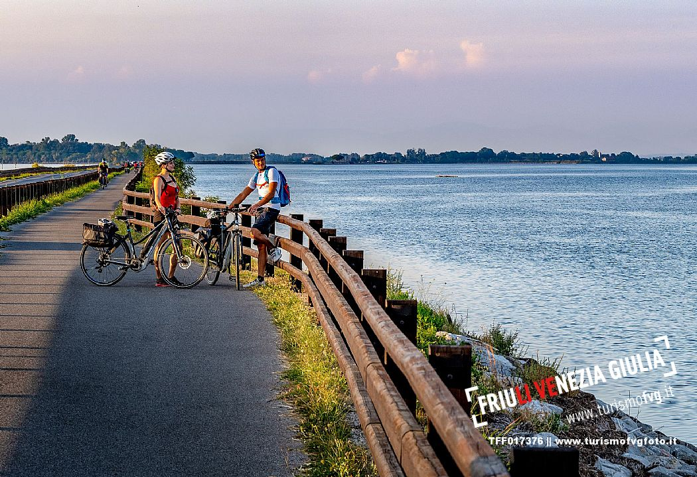
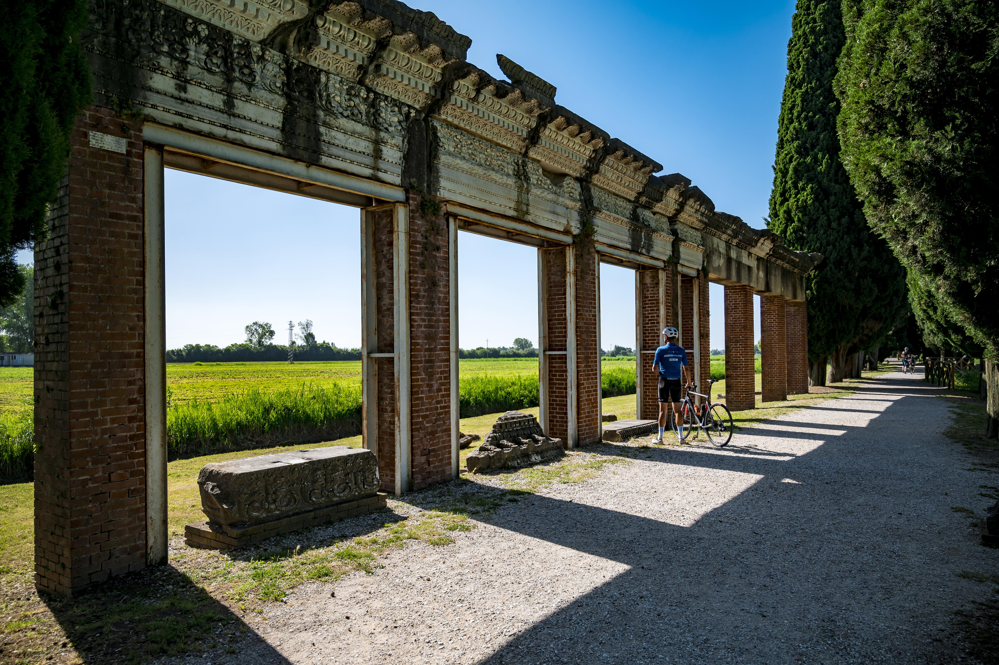

「邊界不是一條線，而是一疊地層；道路不是單純的位移，而是文明交會的切片。
帝國築道、蠻族行軍、鐵路橫貫、國境切斷——今天我們用雙輪重新連起這片土地。」

兩側皆為碧藍水色，騎向亞德里亞海的絕景路段。
跳脫傳統走馬看花，以 15km/h 的視角讀懂阿爾卑斯到亞德里亞海的重層文明。
倫巴底人如何越過隘口？羅馬水軍如何自 Aquileia 內河港航向帝國之海？親自踏踩踏板，感受微地形與河流走向，理解古代軍事地理的必然。
路線精選歐洲排名前列的 FVG1（Alpe Adria）、Parenzana 舊鐵道與斯洛維尼亞國家河谷道，全線專用道與平整鋪面，遠離繁忙車潮，極致安全。
大巴全程作為 SAG（Support and Gear）補給車，行李不離車。全隊配置 E-bike 電輔車選項，體力不適可隨時上車，保留充裕精力聽課與探訪。
西元 568 年，阿爾博因王率領倫巴底大軍翻越東阿爾卑斯山，在 Cividale 建立了義大利本土第一個公國。我們由西向東反向騎行，雙輪穿過文藝復興平原農莊與碧綠的納蒂索內河（Natisone）吊橋，直抵世界遺產小堂與魔鬼橋。
全歐最負盛名的跨國單車道 Alpe Adria 壓軸終章。自威尼斯共和國軍事九芒星城出發，穿過哈布斯堡貴族水車古堡 Strassoldo，滑向西羅馬帝國北疆樞紐 Aquileia，最後奔馳在跨海長堤，直抵亞德里亞海上的 Grado 潟湖。

告別單純的走馬看花環湖，我們沿著薩瓦河（Sava Bohinjka）純淨冰川林蔭小徑切入布萊德盆地，從山頂城堡背後的農村角度，俯瞰阿爾卑斯群山懷抱下的祖母綠湖水。
曾連結第里雅斯特與伊斯特利亞的 1902 年奧匈帝國窄軌鐵路，今已化身友誼單車道。穿越 550 公尺長的 Valeta 磚石火車隧道，穿過橄欖園，滑向中世紀至今運作的古法海鹽結晶池與濕地。
點擊下方按鈕可快速切換並聚焦各段歷史踏查航跡。
提供 50%–70% 頂級電輔自行車，爬坡無負擔，消除年齡與體力差距，全員輕鬆跟隊。
大型行李全程隨車。各停靠點皆有遊覽車待命，體力不適或突遇天候可隨時上車休息。
配置前導領騎員、隨隊文化策展講師與壓後安全技師，歷史節點下車進行露天短講。
全套提供專業安全帽、衛生內襯、前後車燈、車首置物包與海外單車專屬旅遊保險。